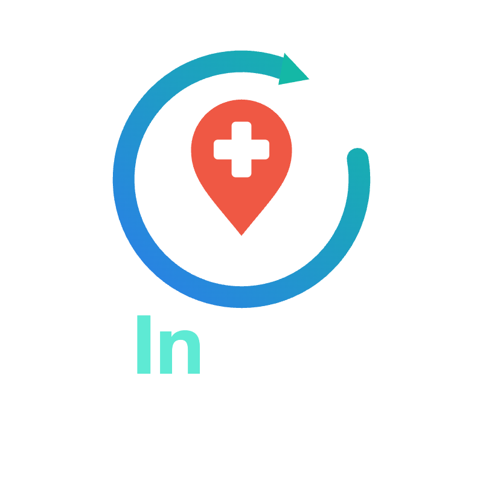

360° 擬真情境教學平台
360 情境導覽
請選擇教案，並輸入姓名或學號開始
連動碼：教師 iPad 控制台連同碼可即時操控本情境內的監視器。團隊碼：全組輸入同一組數字即進入同一場景 — 互相看得到彼此的角色 Avatar、動作即時同步；教師選「教師觀察」可即時標記 TRM 行為（警覺/溝通/互助/領導）

請選擇教案，並輸入姓名或學號開始
連動碼：教師 iPad 控制台連同碼可即時操控本情境內的監視器。團隊碼：全組輸入同一組數字即進入同一場景 — 互相看得到彼此的角色 Avatar、動作即時同步；教師選「教師觀察」可即時標記 TRM 行為（警覺/溝通/互助/領導）